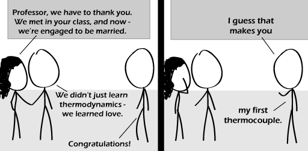

Comic JK 560
When I Feel Like It
⇤
<
?
>
⇥

⇤
<
?
>
⇥
Forum
.
RSS
.
Digg
.
Facebook
.
Reddit
.
Twitter
.
Stumbleupon
Enter your thoughts on number 560 here. Please, no spamming, trolling, phreaking, or puns. Wait on second thought, use all the puns you want. Like at least one pun per webcomic. Because puns are the only thing that make webcomics funny. -> Good call. I met your mother at the abortion clinic. Where are the sunglasses??? ^^^^^^^^^^^^^^^^^ THIS I wish something like that happened for me when I took P-Chem. Then again, all the guys in the class left a lot to be desired....so never mind, no pressure. >Shame on you > College science/engineering guys are generally dorky little virginic boys until they turn 30 or so and then just a few become desirable. Give them time - a few will be very desirable in a few years. Surprised ComicJK didn't get an XKCD guest slot... > Only comic artists who people have actually heard of get guest slots on XKCD. >>Unfortunately; the sense of humor behind the two is virtually the same. >>>Not quite the same; xkcd doesn't use nearly as many puns or engineering jokes; and more computer nerd jokes. >>>>True. I'd also say XKCD is a bit more polished than this one. However, both are most enjoyable. >>>>> yeah, xkcd is signature worthy, but comicjk is funnier. >>>> Which is why internet people get their jokes more often than the ones on here. This place does have some pretty damn funny ones when they're not chemistry or such, though :D And maybe the chemistry or such is funny too, but nobody gets it, cause we're all internet people. Que Ziggy "Stardust" Marley singing his hit song "Internet People" >>>>> I am a chemist and internet guy. So keep them coming! I adore the chemical ones!!! If those two ate out the evening before, they now are therminaters! Whatever, I love comic JK. Where am I going? Far, far away. Comic's really late! (posted 1600 GMT 29/11/10) Love the facepalm Seriously, what the hell is this shit? Is this supposed to be funny?